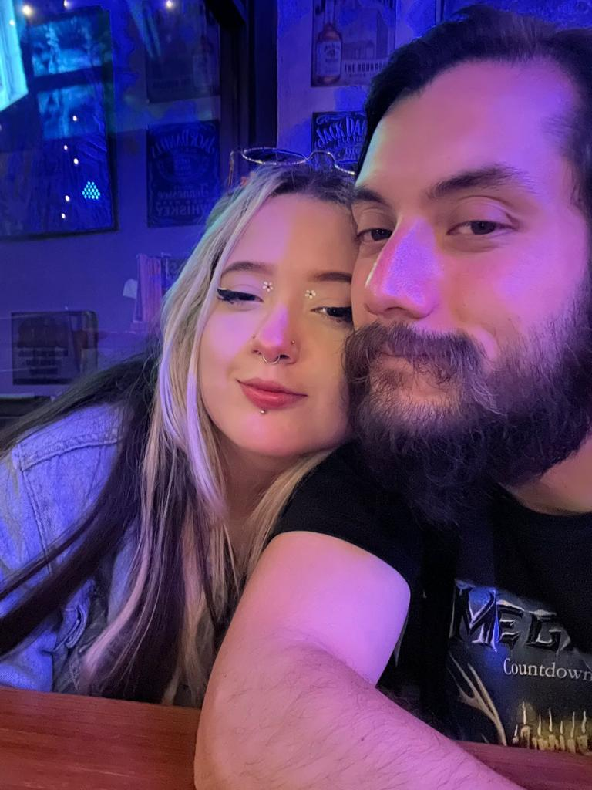

Hola Merry, me quiero disculpar contigo por lo reciente y aprovechar para decirte que yo de verdad agradezco todos los esfuerzos que has hecho por cambiar cosas que nos estaban dañando, yo de verdad valoro y agradezco todo lo que has hecho por nosotros Creeme que yo también intento ser mejor persona para mi y para ti.
Merry de verdad deseo que las cosas entre vos y yo mejoren, Sé que hay muchas cosas que no han estado funcionando bien y requieren trabajo de ambos, quiero que tengamos comunicación y podamos sacar esto adelante juntos, logremos entendernos mejor, yo de verdad me estoy esforzando porque mi interés en lo nuestro es real.
No quiero perderte y que perdamos esto que tenemos y espero podamos mejorarlo entre los dos. Yo estoy dispuesto a seguir dando de mi más junto a ti para que ambos nos sintamos bien y tengamos algo bien lindo.
Te quiero mucho chiquita, te dedico esta cancióncita ♥.
Toca los corazones luego el sobre <3